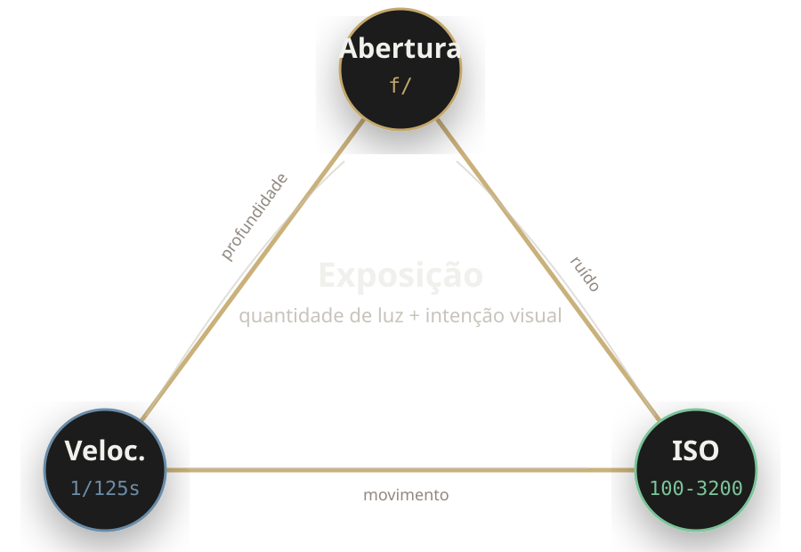
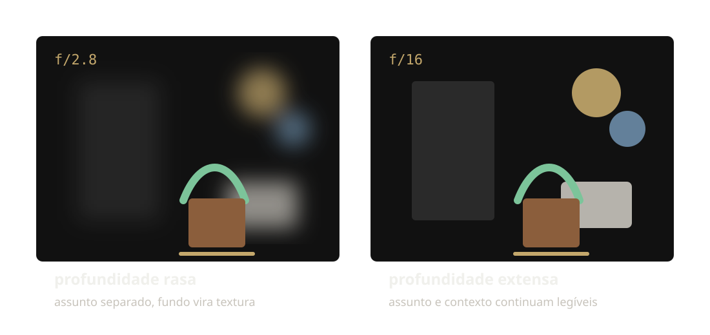
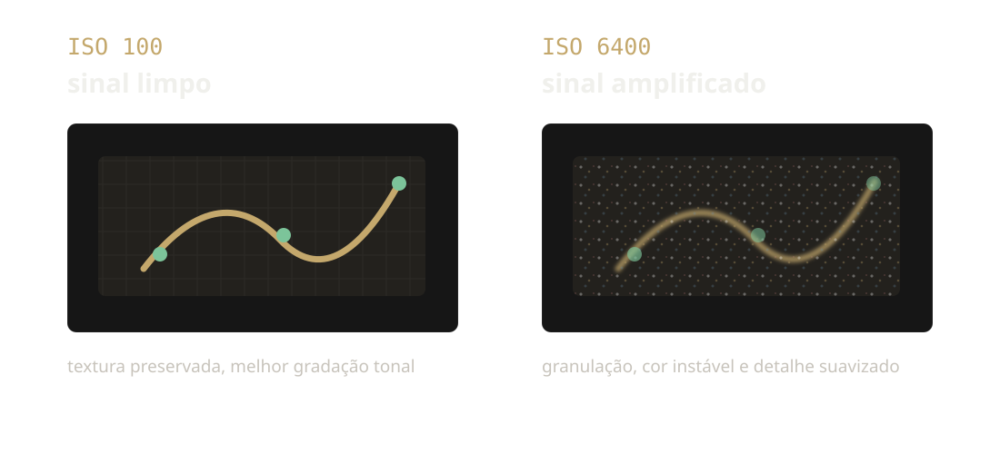
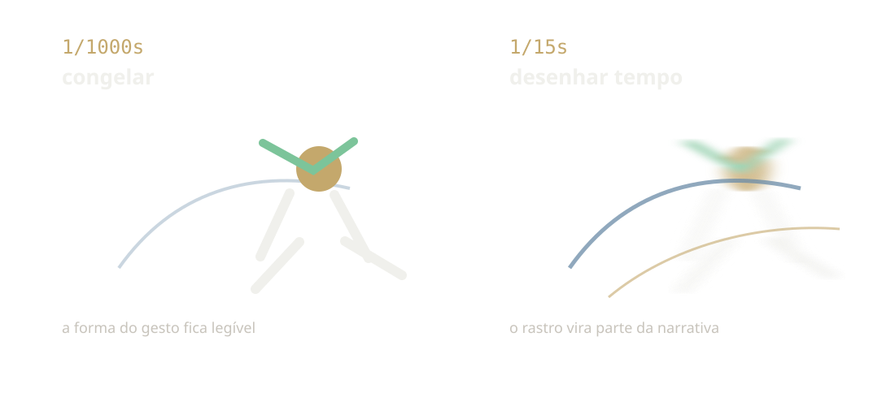
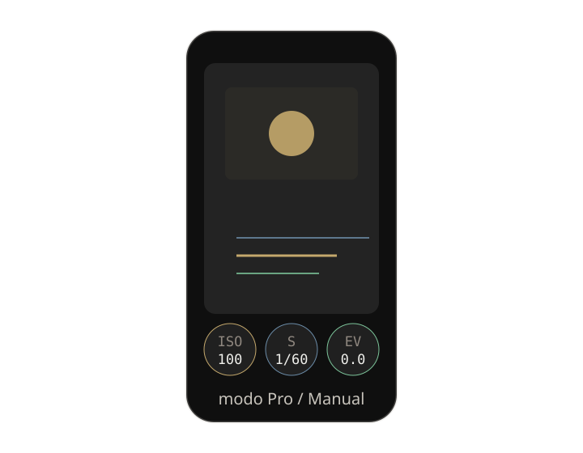
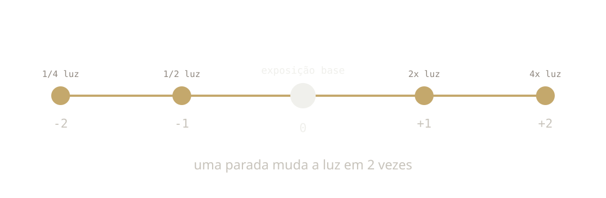
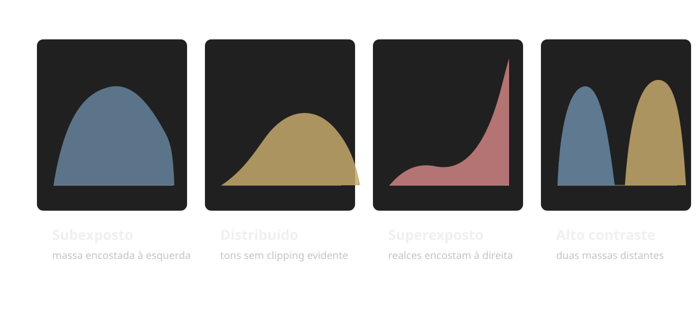

ISO, abertura e velocidade como escolhas técnicas: quanto de luz entra, por quanto tempo e com qual efeito visual.
O intervalo está posicionado para que o bloco de prática (o mais importante) não seja atropelado. Se a turma voltar atrasada do lanche, encurte a explicação do histograma e vá direto para os exercícios.
Na Aula 06 você decidiu o que entra no retângulo. Hoje decide quanta luz entra, por quanto tempo e com qual sensibilidade para congelar, borrar, isolar ou criar silhueta de forma intencional.
O sensor tem alcance dinâmico limitado (geralmente 10–14 stops). O olho humano lida com mais variação de luz. Por isso precisamos escolher o que preservar melhor: sombras ou realces.
ISO · Abertura · Velocidade
Quando você muda um vértice, precisa compensar nos outros dois para manter (ou intencionalmente alterar) a exposição.

O número f é a razão distância focal / diâmetro da abertura. f/2 significa que o diâmetro é metade da distância focal. Quanto menor o número, maior o buraco, mais luz, mais rasa a profundidade.

No celular o ruído aparece mais cedo porque o sensor é menor. Muitos apps aplicam redução de ruído agressiva, que suaviza textura junto com o granulado. Às vezes é melhor ganhar 1/3 de stop com velocidade ou abertura do que subir ISO.


Como um ajuste pede outro ajuste
Aproximo, uso a maior abertura disponível. Para preservar os realces, acelero o obturador ou reduzo o ISO.
Apoio a câmera/celular e uso velocidade baixa. Depois compenso a luz com ISO ou abertura.
Uso velocidade alta (1/500+). Como entra menos luz, compenso com abertura maior ou ISO mais alto.

Os números de abertura são baseados em raiz quadrada de 2. Cada parada de diafragma multiplica o diâmetro por ≈0.707. Por isso a sequência 1.4, 2, 2.8, 4, 5.6, 8, 11, 16... Cada passo é uma parada cheia.
Exemplos possíveis: f/4 • 1/250s • ISO 400 (abriu 1, fechou velocidade 1). Ou f/8 • 1/125s • ISO 800 (fechou abertura 1, subiu ISO 1). O importante é o raciocínio, não só o número certo.
Lendo a exposição antes de corrigir

Sombras sem detalhe. Em JPEG, essa informação quase sempre não volta na edição.
Realces estourados: áreas claras sem textura. Também costuma ser irreversível no JPEG.
Open Camera (F-Droid / Play) é completamente grátis, open source e tem histograma + controles manuais completos. Excelente para a prática desta aula.
Peça que os alunos troquem de celular e tentem "reproduzir" a foto de um colega usando os parâmetros que ele descreveu. Isso revela se a explicação foi clara.
Temperatura de cor, direção da luz, luz natural, luz artificial, modificadores e como isso se relaciona com o triângulo que você praticou hoje.